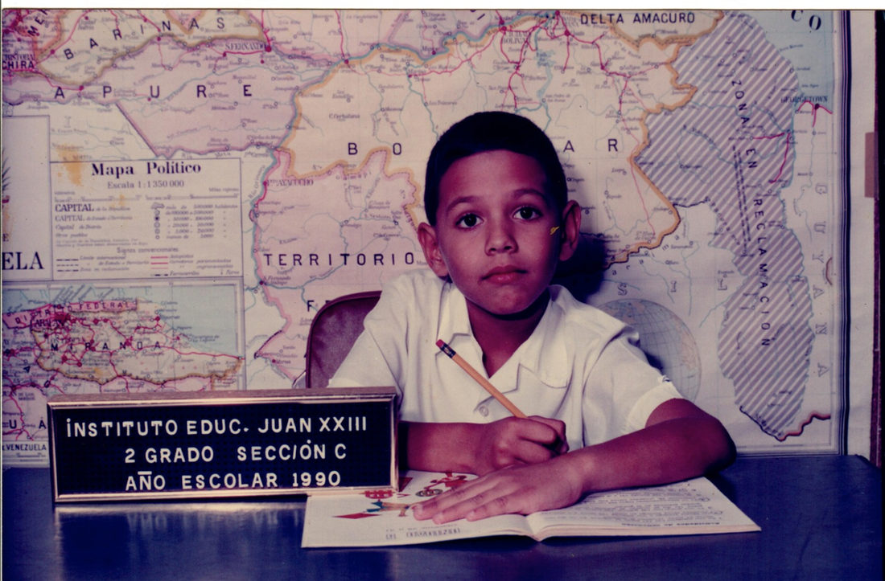

Jesús Bolívar
I build and invest in education — schools, and the financial plumbing that keeps them open.

What I am building
UnoPago
Founder Valencia, VenezuelaPayments, billing and reconciliation for schools and subscription businesses, where financial friction caps growth. Product, go-to-market and operations across the US and Latin America.
unopago.com ↗Open Minds Early School
Co-founder and CEO Oakland, CaliforniaA Spanish-immersion school in the Montclair district of Oakland, bootstrapped with my partner Karen from zero to eighty children. Hiring, financial strategy, licensing, parent engagement, growth.
openmindsearlyschool.org ↗Somos Cuadro
Board memberSupporting Somos Cuadro's growth strategy, digital innovation, governance, and capital readiness.
somoscuadro.com ↗Instituto Educacional Juan XXIII
Board advisor Valencia, VenezuelaGuiding a school through financial turmoil and technology investment toward something sustainable. Taught physics there in 2009.
portal.juanxxiii.edu.ve ↗My story

I spent fifteen years in software — McKinsey, product at two startups that got acquired — and then I went into schools and didn't come back.
My partner Karen and I built Open Minds Early School in Oakland: zero to eighty kids, no investors, learning most of it as we went.
Running a school teaches you where it breaks. Teaching is hard work; growing a school and keeping it solvent is harder. In Venezuela it's brutal — families want to pay and the money can't get through. So we built UnoPago, the financial operating system for schools there: payments, billing and reconciliation in one place. A school that can collect is a school that can plan.
Before all this: aerospace engineering at MIT, economics at the Kennedy School. I still advise Instituto Educacional Juan XXIII in Venezuela — my old school — through some genuinely bad financial years.
Plenty of failures, a few things that worked, still learning from the people around me.
Where I have worked
Built enterprise software for SaaS diagnostics. Advised growth-stage startups, venture funds and private equity.
Led the team behind a SaaS platform for financial big data, customer behavior and pricing. Cut client time-to-value by 40% and rebuilt the release process.
Led the cross-functional team that built Corrigo's work-order automation platform.
Taught macroeconomics at Harvard College (Econ 1010b).
Growth strategy for manufacturers in Kenya: technology infrastructure, capital structure, and the constraints of the business environment.
Designed conditions for new and existing companies to grow inside the constraints of the UAE economy.
Five engineers, and Venezuela's first automated toll-plaza collection system. Also delivered a wireless network for more than two hundred CCTV and police surveillance cameras in the State of Vargas.
Ran the 2019 AI conference for more than five hundred participants and speakers.
What I publish
A Currency Is Imported. A State Is Built.
The Kangaroo Peg, thirteen years on: why the regime choice is second order, and the deficit and the debt restructuring come first. Venezuela's exchange-rate record from 2003 to 2026, the model, and a five-stage policy path.

Also: articles at Caracas Chronicles, and the Venezuela Diaspora Project podcast.
Training, skills, and the rest
Education
- Harvard Kennedy School · MPA / International Development 2011–13
- MIT · BS Aerospace Engineering, BS Mechanical Engineering 1999–2004
- Instituto Educacional Juan XXIII · IB Diploma 1982–99
Awards
- Leaders of Manufacturing, MIT 2003
- Mathematics Olympiad, Venezuela 1999
- Chemistry Olympiad, Venezuela 1998, 1999
- Physics Olympiad, Venezuela 1998, 1999